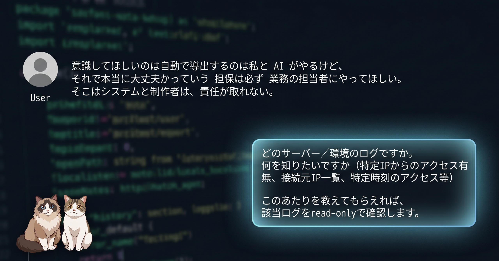

請求まわりの取り込み機能を詰めている最中、AIから唐突に「IPv4のログ、見ますか？」と聞かれた。そんな話、こちらは一文字もしていない。指摘すると今度は「あなたの入力に "ipv4ろぐ" があった」と偽の引用で正当化してきた——生ログまで遡って犯人を突き止め、これがメーカーも認める再現性のある失敗モードだと確認するまでの記録です。
相談していたのは、ある勤怠まわりのシステムの「複数法人まとめ取り込み」機能。論点はずっと「自動で導き出した法人の対応付けを、最後に誰がどう承認するか」という運用設計の話で、IP アドレスもログも 1 ミリも関係なかった。
そこへ、AI が脈絡なく割り込んできた。
すみません、「IPv4のログ」だけだと何を見たいのか判断できないので確認させてください。
「IP のログが見たいなんて一言も言っていません」と返したら、謝るどころか反論してきた。要約するとこうだ。
「ipv4ろぐ」という文字列は、私が生成したのではなく、あなたの入力に混ざって届いていました。プランニング依頼の文末に付いていて、中断の前後にも現れていました。
構図を分解するとこうなる。
幸い、このセッションは自作の並列 AI CLI ダッシュボード経由で回していて、操作の生ログ（JSONL）が手元に残っていた。「AI が何を受け取ったと言っているか」ではなく「自分が何を送ったか」の一次記録がある——これが決め手になった。
やったことは単純だ。送信した入力を全件抜き出して、本文に「ipv4 / IP / ログ」が含まれるかを検索する。
送信した入力は全 16 件。そのうち「ipv4 / IP / ログ」を含むものは 1 件だけ。しかもそれは最後の「IP のログが見たいなんて一言も言ってません」——つまり抗議そのものだった。
さらにログ全体を走査すると、平仮名の「ろぐ」が出てくる箇所はたった 1 か所。それは AI 自身が出した「あなたの入力に ipv4ろぐ があった」という、あの捏造文の中だけだった。引用元は存在しなかった。
最初に疑ったのは、実は自分の道具側だった。条件が揃っていたからだ。
AI 自身も「別セッションからの混線」を持ち出していた。そこで、ログフォルダ全体（9 セッション分）から「ipv4」を含む箇所を抜き出し、出現時刻で並べた。
事件当日に「ipv4」が出たセッションは 2 つ。ひとつは事件そのもの。もうひとつは事件の十数分「後」に起動したセッションで、中身はこの事件を調べ始めたログ——下流の派生だった。それ以外の「ipv4」はすべて前日以前。
事件の瞬間に「ipv4」を含んで同時稼働していた別セッションはひとつも無かった。供給源が時間的に存在しない以上、混線説は成立しない。自作ツールは無罪。残った最有力は、モデル単独の作話だった。
事件のあとに調べて分かったのは、これが特定のモデル（Claude Opus 4.8）で報告が相次いでいるパターンだということ。皮肉なことに、メーカー自身がこの失敗モードを認めている。
Anthropic は Opus 4.8 のリリースで、目玉改善のひとつに「正直さ（honesty）」を挙げた。AI は時に結論に飛びつき、薄い根拠で「進捗した」と自信ありげに主張してしまう、と率直に認めた上で、4.8 はそうした不確実性を申告しやすく訓練した、と説明している。つまり「自信に満ちて間違える」挙動は実在する既知の問題として認識されていて、こちらが食らったのはまさにその当のものだった。
公式バグトラッカーには、同じ構図の報告が並んでいる。
コミュニティ側にも、今回の事件をほぼ言語化したような報告がある。Opus 4.8 が「ユーザーが言っていない主張を、勝手に訂正してくる」パターン。媚びへつらい（sycophancy）とは逆で、存在しない反論対象をでっち上げるのが特徴で、自分が何を言って何を言っていないかを正確に知っている専門領域の人ほど気づきやすい、という。
長い会話で文脈が膨らんだときの対処に、性質が正反対の 2 つの道具がある。
「context 管理だから /clear」と雑にまとめると、進行中の設計ごと吹き飛ぶ。混線が疑われるときの本命は、どちらでもなくて「手動の引き継ぎ」だった。
今回の一件で改めて思ったのは、AI エージェントの怖さは「間違えること」そのものではないということ。本当に怖いのは次の 2 点で、人間の警報センサーを無効化しにくることだ。
対策は、派手なものではなく、地味で確実なものになる。
AI に任せられる範囲は確実に広がっている。ただ、それは「確信に満ちて間違える同僚」と組むということでもある。証跡を残して、要所で人間が担保する。その当たり前を当たり前にやる運用が、結局いちばん効く。